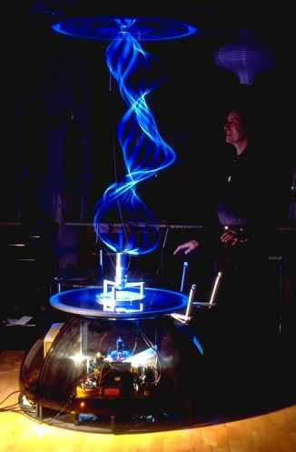

NEW ART GALLERY WALSALL
The New Art Gallery Walsall is a world-class model of accessibility to the arts, where participation and interactivity are fundamental. This £21 million building received one of the largest Arts Lottery grants outside London and is already being hailed as one of the most exciting new art galleries to be built in the UK in the last 20 years.
 The very first exhibition space visitors notice is The Discovery Gallery, located directly off the foyer. Even before entering the building, the glass section of the front wall and the glass dividing wall inside show a glimpse of this space. Prominent amongst the exhibits is NAMBU, an interactive light sculpture commissioned for the gallery which is permanently on show here.
On the Naming of NAMBU
Yoichiru Nambu is the Japanese physicist who first proposed String theory in 1970. For the past thirty years theoretical physicists have been intrigued by the idea that the ultimate constituents of matter are not particles but a special kind of incredibly microscopic string. According to this theory, all the normal constituents of matter we have already learnt about like electrons and protons are all tiny strings in vibration. Depending on the nature of the vibrations, they become different particles. String theory says that there is ultimately only one kind of substance in the universe: String. Everything we see or can detect with the finest scientific instruments are different forms of this same string, everything in the world and all stars and galaxies are made of these strings in various vibrations and associations with each other. The problem for the theorist is that the strings are required to be so incredibly small, far tinier still than atoms or elementary particles and quite beyond the reach of being detected by any experiment which could be carried out within the near or even distant future. They are so small that if a single atom was expanded to the size of the entire observable universe, the strings of this atom would be, well about the size of the sort of string we are used to, maybe a few metres long. For now theorist continue to explore the idea, grappling with hard mathematics but no one has found a way to prove that 'String' really exists.
Home Page | In London | Lightforms' 98 | Zip Art